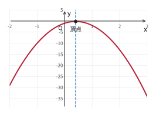

ホーム ＞ 数学I ＞ 2次不等式
すべての実数 \(x\) について \(ax^2+4x-1\leqq0\) が成り立つような定数 \(a\) の範囲を求めよ。
\(x^2\) の係数が文字のときはまず \(a=0\) の場合を調べる。\(a\neq0\) なら、\(\leqq0\) がつねに成り立つ条件は「上に凸 かつ \(D\leqq0\)」。
\(a=0\) のとき \(4x-1\leqq0\) は \(x\) が大きいと成り立たない。よって \(a\neq0\)。
例として \(a=-5\) のグラフ。上に凸で頂点が \(x\) 軸より下にあれば、すべての \(x\) で \(\leqq0\)。

すべての \(x\) で \(\leqq0\) となるには、上に凸 \(a<0\) かつ 判別式 \(D\leqq0\)。
\(a\leqq -4\)（\(-4<0\) より \(a<0\) も満たす）。
【答案（テストに書く形）】
答